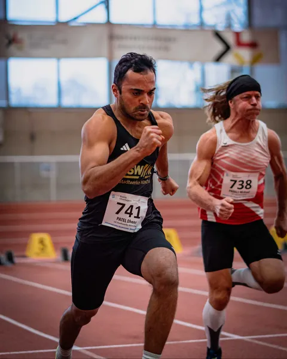
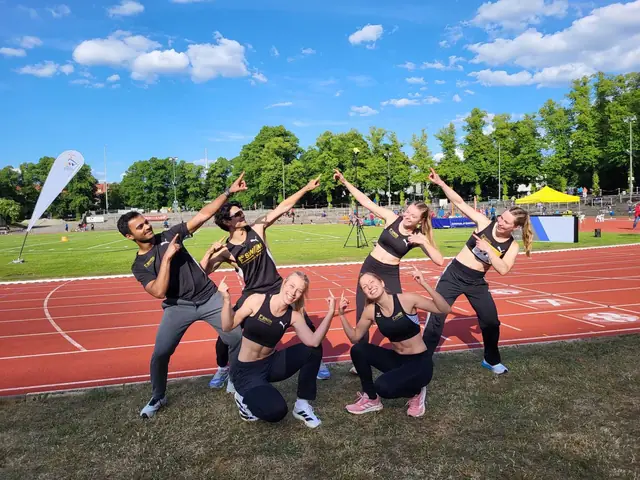

Sport
I run the 100 m and 200 m for LG Stadtwerke München. You can find my race results on my athlete profile. I also play football, tennis and volleyball, and I’m a huge Manchester United fan.


Languages and books
I am very passionate about learning languages as they open doors to new cultures. I currently speak eight languages with conversational fluency — English, German, Hindi, Gujarati, Spanish, French, Italian and Norwegian. Portuguese and Russian are next in line.
I am a huge fan of Jo Nesbø and his books, which inspired me to learn Norwegian. Alongside thrillers, I like reading science fiction and books on psychology.
Here are my top five reading recommendations.
- Behave by Robert Sapolsky
- The Silent Patient by Alex Michaelides
- The Redbreast by Jo Nesbø
- A Confederacy of Dunces by John Kennedy Toole
- The World According to Garp by John Irving
Volunteering
Since June 2026, I volunteer as an interpreter for Initiative krebskranke Kinder München, which supports children with cancer and their families. In 2021 and 2022, I tutored a vocational school student in maths through Studenten bilden Schüler.